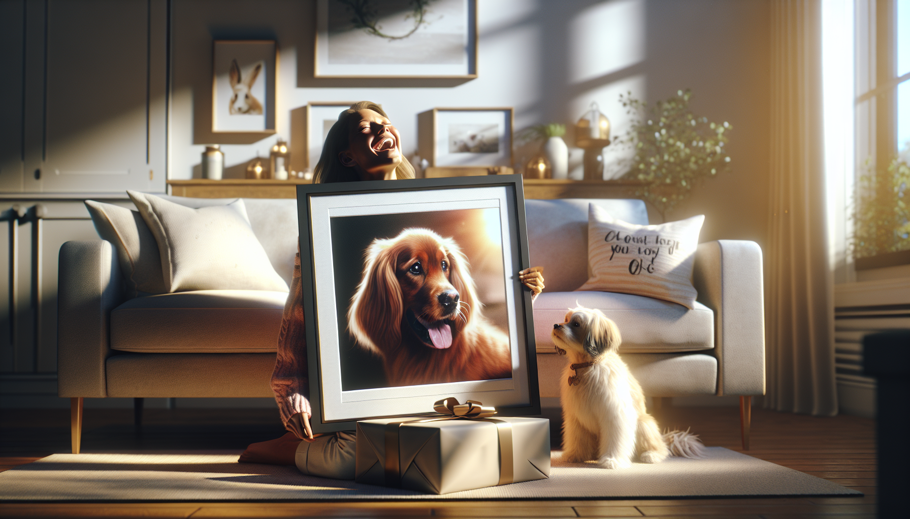

Finding a gift that feels truly meaningful can be surprisingly difficult. You want something personal, memorable, and heartfelt—something that shows real thought went into it. For pet owners, that kind of gift often comes down to one thing: celebrating the animal they love like family. That is exactly why custom pet portraits have become such a popular and cherished gift idea.
Whether you are shopping for a dog mom, a cat dad, a pet-obsessed friend, or even treating yourself, a personalized pet portrait captures more than a cute face. It tells a story. It honors a bond. It turns everyday love into a keepsake that can be displayed and treasured for years.
From birthdays and holidays to anniversaries, housewarmings, and memorial moments, custom pet portraits fit almost any occasion. They are thoughtful without feeling generic, stylish while still deeply emotional, and personal in a way that few gifts can match. If you have ever wondered why these one-of-a-kind creations make such unforgettable presents, here are the biggest reasons custom pet portraits are the perfect gift for pet lovers.
To many pet owners, a pet is not just an animal—it is a loyal companion, a source of comfort, a daily source of laughter, and a beloved member of the family. That bond is deeply personal, which is why gifts that recognize it tend to feel extra meaningful.
A custom pet portrait captures the personality and presence of a pet in a way that standard gifts simply cannot. It transforms a favorite photo into a piece of art that reflects how much that pet means to its owner. Every time they see it, they are reminded of tail wags at the door, cozy naps on the couch, silly habits, and all the little moments that make their pet so special.
Unlike ordinary presents that may be used and forgotten, a personalized portrait speaks directly to the heart. It shows that you understand what matters most to the recipient, and that emotional connection is what makes the gift stand out.
One of the biggest challenges in gift shopping is finding something that does not feel mass-produced. People remember gifts that feel tailored specifically to them, and custom pet portraits do exactly that.
Because the artwork is created from the recipient's own pet, no two portraits are ever exactly alike. You are not giving a generic home decor item or another gift card. You are giving a personalized piece made with intention. That level of customization instantly makes the gift feel more thoughtful and special.
Custom pet portraits can also be designed to match different styles and personalities. Some people love classic, elegant portraits. Others prefer playful, modern, colorful, or whimsical designs. You can choose a look that fits the pet owner's home, taste, and sense of humor, making the final gift even more personal.
When someone opens a gift and immediately says, “This is so me,” you know you got it right.
Some gifts are tied to specific holidays or milestones, but custom pet portraits are wonderfully versatile. They can be given for nearly any occasion, which makes them a smart option whenever you want to surprise a pet lover with something meaningful.
They are especially popular for birthdays and Christmas, but they also make beautiful gifts for Mother's Day, Father's Day, Valentine's Day, anniversaries, and housewarming parties. A custom portrait is also a thoughtful choice for someone who just adopted a new puppy or kitten, celebrating the start of a new chapter with their furry friend.
Another reason custom pet portraits are so powerful is that they can offer comfort during difficult moments. For someone grieving the loss of a beloved pet, a memorial portrait can be an incredibly touching tribute. It honors the pet's life and gives the owner a lasting reminder of the love they shared.
That range makes custom pet art one of the most flexible gift ideas for pet owners. No matter the occasion, it feels appropriate, heartfelt, and memorable.
The best gifts are both emotional and practical, and custom pet portraits strike that balance beautifully. In addition to being deeply personal, they also make stylish home decor that pet owners genuinely enjoy displaying.
A personalized pet portrait can brighten a living room, add warmth to a hallway gallery wall, or bring character to a bedroom, office, or entryway. It becomes part of the home while also serving as a daily reminder of a beloved companion. For people who love decorating with pieces that tell a story, custom pet art is especially appealing.
Another advantage is that pet portraits can complement a wide range of decor styles. Whether the home is modern, cozy, rustic, minimalist, or eclectic, there is a design approach that will fit seamlessly. That makes it easier to choose a gift that feels beautiful as well as sentimental.
Instead of giving something that gets tucked away in a drawer, you are giving something meant to be seen and enjoyed every day. That kind of lasting presence adds even more value to the gift.
Every pet has its own charm. Some are goofy and energetic. Others are regal, gentle, mischievous, or endlessly cuddly. One of the most wonderful things about a custom pet portrait is how it preserves that personality in a lasting, visual form.
A great portrait does more than replicate a photo. It highlights what makes that pet recognizable and lovable—the soulful eyes, the floppy ears, the proud posture, the playful grin. Those details matter immensely to pet owners, because they are what make their companion feel irreplaceable.
Photos on phones are wonderful, but they can get buried among thousands of images. A custom portrait gives those memories a permanent place of honor. It elevates a favorite moment into something tangible and lasting, something that can be enjoyed long after trends change and devices are upgraded.
For many pet lovers, that permanence is part of the magic. It is a way of saying, “This bond matters. This pet matters.” And that message is incredibly powerful in a gift.
There is something especially impressive about a gift that looks deeply thoughtful without requiring the recipient to explain what they want. Custom pet portraits feel elevated and intentional, which makes them ideal when you want to make a strong impression.
At the same time, they are easier to gift than many people expect. All it usually takes is a clear photo of the pet and a sense of the style you want. From there, the portrait can be created into a personalized product that feels polished, creative, and full of heart.
That convenience is a big reason gift shoppers love them. You get the emotional impact of a highly personalized present without the stress of guessing sizes, worrying about duplicate gifts, or settling for something ordinary. It is a thoughtful solution that feels both easy and meaningful.
If you want a gift that says, “I really thought about this,” custom pet portraits deliver that message beautifully.
Some gifts get a smile. Others create a moment. Custom pet portraits often do the second. They are the kind of present that makes people pause, laugh, tear up, and immediately want to show everyone in the room.
Why? Because the gift feels deeply seen. It reflects something the recipient loves wholeheartedly, and it does so in a personal, artistic way. That emotional response is what turns a nice present into an unforgettable one.
Gift giving is not just about the object itself—it is about the feeling it creates. A custom portrait can spark joy, nostalgia, gratitude, and even happy tears. It becomes part of the memory of the occasion, whether that is a birthday breakfast, a holiday celebration, or a quiet moment of remembrance.
And long after the wrapping paper is gone, the portrait remains. It hangs on a wall, sits on a shelf, or becomes part of a treasured collection of pet keepsakes. Every time the recipient sees it, they remember both their pet and the thoughtfulness behind the gift.
When you are searching for a gift that is personal, emotional, stylish, and memorable, custom pet portraits check every box. They celebrate the bond between pets and their people, work for countless occasions, complement the home, and preserve beloved memories in a beautiful way.
For pet owners, few things feel more special than seeing their furry best friend honored in a piece made just for them. That is what makes custom pet portraits more than a trend—they are keepsakes with heart. Whether you are shopping for a dog lover, a cat enthusiast, or anyone who treats their pet like family, this is the kind of gift that leaves a lasting impression.
If you are ready to give a gift that feels truly thoughtful and unforgettable, custom pet portraits are a wonderful place to start.
Shop personalized pet products at SnoutAndAbout on Etsy.